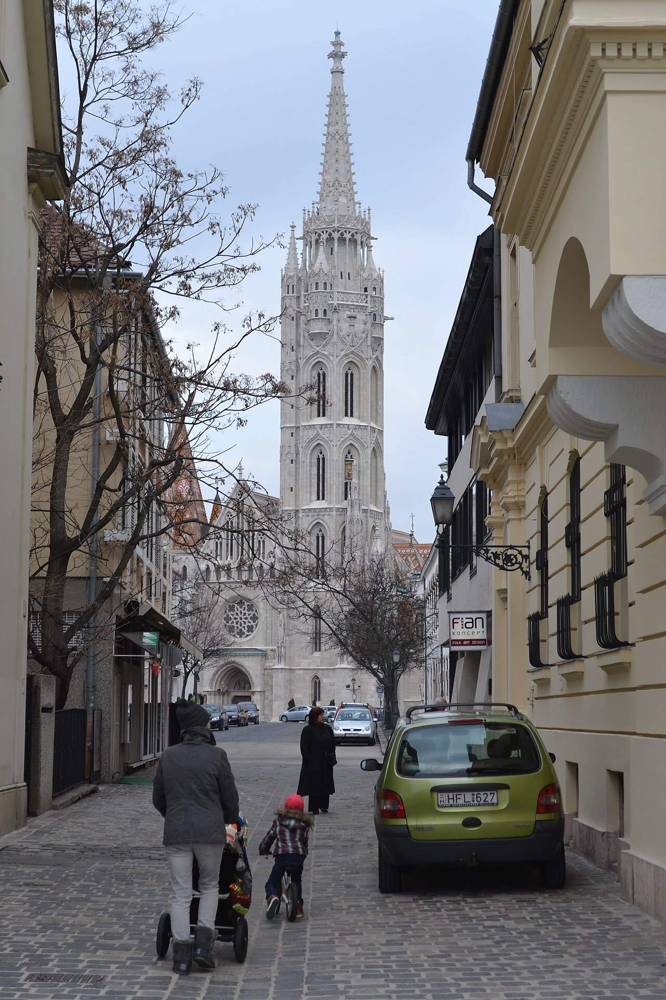

OTIUM is the practice of deliberate leisure. In the classical sense, otium is not escape from work but time when attention returns to memory, landscape, and thought — without a utilitarian deadline.
We shape routes for lingering, not for checklist tourism. The goal is presence in a place rather than consumption of sights.
OTIUM is not a tour operator. It is an invitation to walk, pause, and leave a route unfinished if the light on a façade deserves another minute.
Historical and reference coats of arms
Budapest
Guide. Places in this edition: 33.
Trip ideas
One day
A compact loop linking the strongest cards in this guide, ordered to minimise backtracking on foot.
Andrássy Avenue is Budapest's most iconic street, a grand boulevard lined with majestic buildings and exquisite art nouveau architecture. It stretches for over four kilometers through the heart of the city, connecting Heroes' Square to Vörösmarty Square. Grand boulevard lined with mansions, embassies, Opera, and House of Terror museum—UNESCO buffer around the Millennium Metro below. The street features numerous examples of Art Nouveau and Secessionist styles, including the famous Rózsavölgyi House and the Grand Hotel Trianon. It houses several notable landmarks such as the Parliament Building and the Széchenyi Chain Bridge. Andrássy Avenue has been listed as a UNESCO World Heritage Site since 1987 due to its exceptional cultural significance. During the day, visitors can enjoy shopping, dining, and people-watching while admiring the beautiful facades. At night, the street comes alive with colorful neon lights illuminating the buildings. Metro M1 is continental Europe’s oldest underground line (1896). Cafés on side streets offer quieter breaks than the main road.
Built between 1860 and 1912, Andrássy Avenue was designed as part of the city's expansion during the late 19th century. Originally named after Prime Minister Gyula Andrássy, it became known for its luxurious hotels, cafés, and elegant shops that attracted both locals and tourists alike. Today, it remains one of the most charming and picturesque streets in Europe. Laid out from 1872 as a representative axis for the growing capital. Visiting Andrássy Avenue offers a glimpse into Budapest’s rich architectural heritage and provides a unique opportunity to stroll along a historic route filled with vibrant culture and atmosphere. Defines Pest’s elegant 19th-century urban fabric.
Aquincum Museum
Step back in time to ancient Rome at the Aquincum Museum, where artifacts and ruins bring to life the Roman province of Pannonia. Established as a Roman military base around 89 AD. Ruins include the largest Roman bath complex north of the Alps. The site is located near the former Roman capital of Pannonia. Excavations began in the late 19th century. Houses statues, mosaics, and sculptures from the Roman era.
Founded in the 1st century AD, Aquincum was a thriving Roman military camp and settlement on the banks of the Danube River. Today's museum preserves remains of baths, temples, and amphitheaters, offering visitors a glimpse into daily life during the Roman Empire. Visit Aquincum Museum to explore the rich history of Budapest’s Roman past and understand how it shaped modern Hungary.
Buda Castle
Address: Buda Castle Hill | Style: Mixed historic palace architecture | Period: 13th century
Sitting majestically on a hilltop overlooking the Danube River, Buda Castle is one of Budapest's most iconic landmarks and a testament to Hungary's rich historical heritage. Royal palace complex housing the Hungarian National Gallery, the Budapest History Museum, and National Széchényi Library. Constructed primarily in the Renaissance style with later baroque influences. Located on Castle Hill, offering panoramic vistas of the city. Designated a UNESCO World Heritage Site in 1987. Renovations completed in the 1960s after significant wartime destruction. Serves as a cultural hub, hosting various exhibitions and events. Funicular from Clark Ádám Square saves the steep climb. Courtyards and terraces give wide Pest-side panoramas.
Originally built in the 13th century as a fortress, Buda Castle evolved into a royal palace during the reign of King Matthias Corvinus in the late 15th century. After extensive damage during World War II, it was painstakingly restored to its former glory by Hungarian architects in the mid-20th century. Today, it houses the Royal Palace Museum, showcasing art and artifacts from Hungary’s royal past. Royal seat from the 13th century onward; repeatedly destroyed and rebuilt—today’s shell largely mid–20th century. Visitors come to Buda Castle for its breathtaking views, architectural splendor, and fascinating museum collections that offer insights into Hungary's royal history. UNESCO-listed Buda Castle Quarter core with ramparts, churches, and cobbled streets.
Buda Castle Funicular
Period: 1900
Climb aboard the Buda Castle Funicular for a scenic journey up to one of Budapest's most iconic landmarks—Buda Palace. This charming cable car ride offers breathtaking views of the Danube River and the historic Pest district below. Operates daily from early morning until late evening. The funicular runs approximately every 10 minutes during peak hours. It is the oldest operating funicular railway in Hungary. The journey takes just three minutes but feels like a mini-adventure. Offers wheelchair accessibility.
Built in 1900, the funicular was originally designed by Hungarian engineer Ármin Vámbéry as a means to connect the royal palace on Castle Hill with the rest of the city. Over the years, it has become a beloved local attraction and a symbol of Budapest’s unique charm. Experience the panoramic vistas of the capital city while enjoying a leisurely ride through the heart of Buda’s hilltop neighborhood.
Citadella
Style: Military fortification architecture | Period: 1851–1856
Perched high above Budapest on a hilltop overlooking the Danube River, Citadella is one of the city's most iconic landmarks and a testament to its rich military heritage. Completed in 1856 after five years of construction work. Designed by Italian architect Carlo Marcellino and built under Austrian rule. Features four towers with distinctive architectural styles reflecting different periods of design evolution. Today houses museums, cafes, and restaurants providing entertainment for locals and tourists alike. Offers unparalleled views of Buda Castle, Chain Bridge, and Pest district.
Built between 1851 and 1856, the Citadella was originally constructed as a fortress designed to defend the capital against potential threats. It served as both a military stronghold and a strategic observation point during Hungary's turbulent years following the Napoleonic Wars. Today, it stands as a symbol of resilience and a popular tourist attraction offering panoramic views of the city below. Visiting Citadella allows visitors to experience breathtaking vistas while learning about the historical significance of this impressive structure.
Dohány Street Synagogue
Address: Dohány Street, VII district | Style: Moorish Revival | Period: 1854–1859
The Dohány Street Synagogue, Budapest's largest and most impressive synagogue, stands as a testament to the city's vibrant Jewish heritage. Built between 1854 and 1859, it is one of Europe’s largest Orthodox synagogues, known for its neo-Romanesque architecture and ornate interior. Moorish Revival synagogue—largest in Europe by seating—with museum and cemetery garden in the block. It is the largest synagogue in Central Europe. Its exterior features elaborate carvings and statues depicting biblical scenes. Inside, the synagogue boasts intricate woodwork and colorful stained-glass windows. During World War II, the building was used as a shelter for Jews escaping persecution. Today, it operates as both a museum and active place of worship. The Raoul Wallenberg Holocaust Memorial Park adjoins the site. Guided visits explain the organ and women’s gallery.
Constructed during the mid-19th century, the Dohány Street Synagogue was designed by Austrian architect Ludwig Förster. Originally intended as a house of worship for Budapest's growing Jewish community, it served as a symbol of religious freedom and cultural integration. Today, it remains a significant historical site, preserving memories of Hungary's rich Jewish past. Built 1854–1859; the ghetto wall during the siege of Budapest ran partly through the complex. Visiting the Dohány Street Synagogue allows travelers to experience the architectural grandeur and spiritual significance of one of Europe's most notable houses of worship. Centre of Neolog Judaism in Hungary and a key site on Jewish heritage walks.
Fisherman's Bastion
Address: Hess András Square, Buda Castle district | Style: Neo-Romanesque | Period: 1895–1902
Overlooking the Danube River and Buda Castle, Fisherman's Bastion is a majestic fortification built during the late 19th century to defend the city's western flank. Its seven towers symbolize Hungary’s historic counties. Fairytale terraces and turrets above the Danube with views toward Parliament—built as a lookout, not a fortress. The bastion has seven towers, each representing one of Hungary’s traditional counties. It was designed by renowned Hungarian architects Miklós Ybl and Frigyes Schulek. Its construction began in 1895 and ended in 1902. Visitors can ascend the towers for panoramic views of the city. Fisherman's Bastion is located on Castle Hill overlooking the Danube. Named after the fishermen’s guild once tasked with defending this stretch of wall. Seven towers evoke the seven Magyar chieftains of legend.
Constructed between 1895 and 1902 by Miklós Ybl and Frigyes Schulek, the bastion was originally intended as a defensive structure but later became a popular tourist attraction. It offers panoramic views of Budapest's scenic riverbanks and iconic buildings like Parliament and St Stephen's Basilica. Completed around 1902 to designs by Frigyes Schulek near Matthias Church; partly fee-charging for upper terraces. A must-visit for its breathtaking vistas and historical significance, Fisherman's Bastion provides a unique perspective on Budapest’s rich cultural heritage. Romantic panorama point and wedding-photo favourite above the river bend.
Four Seasons Gresham Palace
Style: Art Nouveau | Period: 1911
The Four Seasons Gresham Palace is a historic hotel nestled within Budapest's elegant Andrássy Avenue, once known as the 'Champs-Elysees of Hungary.' Built in 1911, it was originally constructed as a luxurious palace hotel by the renowned architect Ödön Lechner. Opened in 1911 as a luxury hotel for wealthy travelers. Designed by Hungarian architect Ödön Lechner in the Art Nouveau style. Listed as a cultural heritage site in 1964. Located on Andrássy Avenue, a UNESCO World Heritage Site. Offers panoramic views of the city and the Danube.
Completed in 1911, the Gresham Palace served as one of the most opulent hotels in Europe during its time. Designed in the Art Nouveau style, it showcased exquisite interior decorations and modern amenities for its era. The building has been listed as a cultural heritage site since 1964 and remains a symbol of Budapest’s architectural grandeur. Visitors come to experience the elegance and historical charm of this iconic hotel, which offers breathtaking views of the Danube River and serves as a reminder of Budapest's rich past.
Gellért Hill
Address: Gellért Hill, XI district | Style: Historic fortifications and monuments
Perched high above Budapest, Gellért Hill offers panoramic views of the Danube River and the city below. Its lush green slopes are a serene escape from bustling downtown life. Limestone hill above the Danube: Citadel, Liberty Statue, and lookout paths over bridges and rooftops. The hill is home to the Gellért Thermal Baths, known for their healing waters and luxurious spa treatments. It features a picturesque castle ruin that provides a glimpse into medieval Hungarian history. Atop the hill stands the impressive Citadella, offering further scenic views over the city. During nighttime, the hill is illuminated, creating a magical atmosphere that enhances its beauty. Gellért Hill is also famous for its colorful Art Nouveau architecture, particularly seen in the nearby baths. The Cave Church is carved into the hillside near the base. Wear sturdy shoes; some paths are steep and exposed.
Named after Saint Gellért, who was martyred here in the 10th century, Gellért Hill has long been a sacred site. It became a popular tourist attraction with the construction of the iconic Gellért Spa Hotel in 1912, which remains one of Hungary's most recognized landmarks. Fortifications from the 19th century; the giant female Liberty figure dates to Soviet-era commemoration, reinterpreted today. Visitors come to Gellért Hill for its breathtaking vistas and historical significance, making it a must-see destination for anyone exploring Budapest. Classic sunset viewpoint and a geological backdrop to the Gellért Baths below.
The Great Market Hall is Budapest's iconic central market, a testament to the city's rich architectural heritage and vibrant culinary culture. Iron-framed hall with a colourful Zsolnay roof: paprika, lángos, and souvenirs on the ground, more food upstairs. Opened in 1897 during the Austro-Hungarian Empire era. Designed by renowned architect Ödön Lechner. Listed as a National Monument since 1964. Features colorful stalls selling local specialties like paprika and goulash. Hosted numerous cultural events and festivals throughout its history. Try the gallery level for simple Hungarian dishes. Liberty Bridge is steps away for a riverside walk.
Built in 1897, the Great Market Hall was designed by architect Ödön Lechner in the Neo-Moorish style. It served as the main food market for Budapest until the mid-20th century, offering fresh produce, meats, and spices from across Hungary. Today it remains one of the most visited tourist attractions, blending historical significance with modern charm. Opened in 1897; designed by Samu Pecz as a modern wholesale market near the river and tram termini. Visit the Great Market Hall to immerse yourself in traditional Hungarian cuisine and witness the lively atmosphere of Budapest’s bustling marketplace. Working market and tourist ritual in one noisy, fragrant building.
Heroes' Square
Address: End of Andrássy Avenue, City Park entrance | Style: Historicist monuments | Period: 1896–1929
Heroes' Square is Budapest's most iconic monumental ensemble, showcasing the city's proud history and national identity. Situated on Buda Hill, it was built between 1896 and 1929 as part of the Millennium Monument to commemorate a thousand years since Hungary's establishment. Monumental square with the Millennium Memorial, colonnades of historic figures, and two major art museums on either side. The square is surrounded by neoclassical buildings designed by Imre Steindl and Ödön Lechner. It houses the Museum of Hungarian History, which displays artifacts related to Hungary’s past. In the center stands the imposing statue of King Stephan I, Hungary's first king. Each side of the square represents different periods of Hungarian history, including medieval times, the Reformation era, and the Age of Enlightenment. Heroes' Square became a UNESCO World Heritage Site in 1987. The Museum of Fine Arts and the Hall of Art frame the square. Ice skating and the zoo lie deeper in the park behind.
Constructed over several decades, Heroes' Square features statues of Hungarian kings, queens, and heroes, along with allegorical figures representing various aspects of Hungarian culture and history. The square also includes the massive Statue of Széchenyi, symbolizing progress and reform. Laid out for Hungary’s 1896 millennium celebrations; later adapted as a site for mass gatherings and national holidays. Visitors come here to admire the grandiose architecture, impressive sculptures, and stunning views of the Danube River. Hungarian history in stone—mythic chieftains, kings, and independence themes in one vista.
House of Terror Museum
Style: Art Nouveau | Period: Early 20th century
The House of Terror Museum is Budapest's chilling reminder of the dark chapters of Hungary's recent past. Located in a former Gestapo headquarters and Nazi prison, it tells the story of repression, resistance, and survival during World War II. It houses exhibits documenting both Nazi and Communist atrocities. Visitors can explore the original cells and interrogation rooms used by the occupying forces. Interactive displays provide context through multimedia and artifacts. Guided tours are available in multiple languages. The museum has won several awards for its innovative approach to historical storytelling.
Built in the early 20th century as the headquarters for the Hungarian secret police, the building later became the dreaded Gestapo HQ under Nazi occupation. After the war, it served as a prison until its closure in 1989. The museum opened in 2002 to commemorate the victims of totalitarian regimes. This museum offers a harrowing yet essential look into Hungary’s struggle against fascism and oppression.
Hungarian National Museum
Style: Neoclassical and Contemporary | Period: 1808
The Hungarian National Museum is Budapest's premier cultural institution, showcasing the nation's rich historical and artistic heritage. It houses over 4 million items in its collection, including archaeological finds, paintings, sculptures, and manuscripts. Notable exhibits include ancient Roman relics, medieval religious artifacts, and works by famous Hungarian artists such as Munkácsy and Klimt. The museum underwent major renovations in the early 2000s, enhancing accessibility and modernizing its facilities. Its architecture reflects various styles, blending neoclassical elements with contemporary design. Located on Vörösmarty Square, it offers panoramic views of the Danube River.
Established in 1808 as the Royal Hungarian Academy of Sciences, it later evolved into a museum dedicated to Hungary's culture and history. Over time, its collections expanded significantly, becoming one of Europe’s most comprehensive repositories of Hungarian art and artifacts. Visitors come here to explore Hungary's history, art, and culture through its extensive exhibits and collections.
Hungarian Parliament Building
Address: Kossuth Lajos Square, Pest riverbank | Style: Neo-Gothic | Period: 1885–1902
The Hungarian Parliament Building is Budapest's most iconic landmark, towering over the banks of the Danube River. Completed in 1902, it showcases a blend of neo-Gothic and neo-Renaissance styles, with its towering spires reaching towards the skyline. Neo-Gothic riverside parliament with a tall central dome and long symmetrical wings—Hungary’s largest building and a postcard symbol of Budapest. It has two wings, each containing around 600 rooms. Its interior features lavishly decorated halls and chambers, including the Council Hall and the Royal Throne Room. The building stands on a hill overlooking the Danube, offering panoramic views of the city. Construction cost nearly three times more than initially budgeted due to design changes and delays. Today, it serves as both a museum and a working parliament. Guided visits cover the dome hall and ceremonial stairs when sessions allow. The building faces the Danube across from Buda Castle and the Chain Bridge.
Built between 1885 and 1902, the Parliament was designed by architect Imre Steindl to house Hungary’s legislative assembly. The building boasts intricate decorations, including statues representing historical figures and allegorical scenes depicting Hungarian culture and values. Built from the late 19th century after the 1867 Compromise; designed by Imre Steindl. Heavily damaged in World War II and restored in stages. Visiting the Hungarian Parliament offers a glimpse into Hungary's rich political and cultural heritage. Seat of the National Assembly and a national emblem of Hungarian statehood.
Hungarian State Opera House
Address: Andrássy Avenue 22, VI district | Style: Neo-Renaissance | Period: 1884
The Hungarian State Opera House is Budapest's iconic cultural landmark, famed for its opulent neo-Renaissance architecture and world-class performances. Renaissance Revival opera house with rich auditorium gilding—home to opera and ballet after a major recent restoration. It opened on December 23, 1884 with Verdi's 'Aida'. Its lavish interiors feature gold leaf decorations, marble columns, and crystal chandeliers. The building underwent extensive renovations in the early 20th century under the direction of Adolf Schulz. Today it remains one of the top venues for opera and classical music in Central Europe. Famous conductors such as Herbert von Karajan have conducted here. Guided tours run when rehearsals allow. The avenue is lined with cafés toward Heroes’ Square.
Built in 1884, the opera house was designed by the renowned architect Frigyes Schulek to serve as a venue for grand operas, ballets, and classical music concerts. It quickly became a symbol of Hungary’s artistic prowess and international recognition, hosting some of Europe’s most celebrated performers over the decades. Opened in 1884 to Miklós Ybl’s design; acoustics were praised from the first season. Visiting the Hungarian State Opera House allows one to experience both the rich history of Hungarian culture and the breathtaking beauty of its interior design. One of Europe’s great lyric theatres and a UNESCO-listed stretch of Andrássy Avenue.
Kopaszi-gát
Period: late 19th century
Situated on the Buda side of the Danube River, Kopaszi-gát is a charming park offering panoramic views of the river and the Pest shoreline. The park's lush greenery provides a peaceful escape from the bustling city center. Established in the late 1800s during the era of Hungarian industrialization and modernization. Features a mix of formal gardens and natural woodland areas. Offers walking trails that lead to various points along the riverside. Adjacent to several historical landmarks including Castle Hill and the Royal Palace. A favorite spot for romantic strolls and photography.
Originally opened in the late 19th century as part of the city's urban development plan, Kopaszi-gát was designed to connect Buda with Pest across the river. Over time, it has become a popular destination for locals and tourists alike, known for its scenic walks and tranquil atmosphere. Visit Kopaszi-gát to enjoy breathtaking vistas of the Danube and experience the serene beauty of Budapest’s green spaces.
Liberty Bridge
Address: Connects Fővám Square (Pest) and Gellért Square (Buda) | Style: Art Nouveau bridge | Period: 1930–1933
Spanning the Danube River and connecting Buda to Pest, Liberty Bridge is a testament to modern engineering of its era. Completed during the interwar years, it was designed by Hungarian architect Ödön Lechner. Green Art Nouveau truss bridge with a central pedestrian strip—popular at sunset and during summer festivals. It connects two major districts of Budapest—Buda and Pest. The bridge was originally named Chain Bridge II due to its similarity to the nearby Chain Bridge. Its construction marked a significant advancement in Hungarian civil engineering. Liberty Bridge has undergone several renovations since its opening but retains much of its original design. It is one of the few remaining examples of Art Nouveau architecture in Budapest. The Turul bird statue tops a Buda-side pillar. Occasionally closed to traffic for public gatherings.
Constructed between 1930 and 1933, Liberty Bridge replaced an older suspension bridge that had been damaged during World War I. Designed in the Art Nouveau style, it showcases intricate ironwork and decorative elements typical of Lechner's work. The bridge became an iconic symbol of Budapest’s urban landscape, offering panoramic views of the river and surrounding hills. Opened in 1896 as Franz Joseph Bridge; renamed after 1945. Trams share the deck with walkers. Visitors should experience Liberty Bridge for its historical significance and breathtaking vistas over the Danube. Visual neighbour to the Great Market Hall and Gellért Hotel.
Margaret Island
Address: Danube between Margaret Bridge and Árpád Bridge | Style: Landscape park | Period: late 19th century
Situated in the heart of Budapest, Margaret Island is a serene oasis offering tranquility amidst bustling city life. This man-made island was created by damming the Danube River and has been a favorite retreat for locals and visitors since its inception. Green kilometre-long island: promenades, ruins, a small zoo, pools, and summer musical fountain shows. The island spans approximately 64 hectares and features extensive parkland and walking trails. It houses one of Europe's largest thermal bath complexes, the Széchenyi Baths, which attracts thousands of visitors daily. Margaret Island also boasts the elegant Royal Palace, originally built as a summer residence for Hungarian nobles. In addition to its cultural attractions, the island provides opportunities for cycling, jogging, and picnicking. Locals often refer to it as 'a little piece of paradise' within the city. Rent bikes or electric carts to circle the island quickly. Medieval Dominican convent ruins remain near the centre.
Originally constructed in the late 19th century as part of urban planning efforts to provide green spaces for residents, Margaret Island derives its name from Saint Margaret of Hungary, a medieval princess who is revered locally. The island became a popular recreational area with the construction of several notable landmarks such as the Széchenyi Baths and the Royal Palace. Monasteries once stood here; today it is a public park with sports facilities and spas. A must-visit destination for anyone seeking respite from urban hustle, Margaret Island offers scenic walks, historical monuments, and luxurious bathing facilities. Local lung between Buda and Pest—runners, families, and festival crowds share the paths.
Dominating the Pest side of Budapest’s Danube River embankment, Matthias Church is a majestic Baroque edifice that has been a symbol of Hungarian identity for centuries. Colourful tiled roof and mixed Gothic lines: coronations and royal weddings once took place under its vaults. It stands on the site where the first stone church was built in the 11th century. The interior features intricate frescoes and statues by renowned artists like Miklós Perényi. Its tower offers breathtaking vistas of the city and the river below. The church was heavily damaged during World War II but was painstakingly restored post-war. Today it serves as both a religious venue and a cultural landmark. Franz Joseph and Elizabeth were crowned king and queen of Hungary here in 1867. Interior frescoes and the organ draw concert audiences.
Built between 1728 and 1769, Matthias Church was originally dedicated to St. Mikhail but later renamed after King Matthias Corvinus, who played a pivotal role in Hungary's medieval history. The church underwent significant reconstruction during the 19th century, earning its current neoclassical appearance. Core from the 13th–15th centuries with later Baroque and 19th-century Neo-Gothic restoration by Frigyes Schulek. Visitors come here to admire its grandiose architecture and soak in the panoramic views over the Danube. Buda’s main church for centuries and a visual anchor next to the Fisherman’s Bastion.
Budapest
Address: See official visitor information.

Museum of Applied Arts
Style: Art Nouveau | Period: 1896
The Museum of Applied Arts is a world-class institution showcasing the finest examples of decorative and applied arts from across Europe. Established at the turn of the 20th century, it houses collections that span centuries, from medieval craftsmanship to modern design. It showcases over 40,000 objects from various periods and cultures. Its collection includes works by renowned artists such as Gustav Klimt and Alphonse Mucha. The building itself is a masterpiece of Art Nouveau architecture, featuring intricate ceramic tiles and stained glass windows. Regular temporary exhibitions highlight contemporary trends in design and crafting. Visitors can explore thematic displays dedicated to ceramics, textiles, furniture, and jewelry.
Founded in 1896 during Hungary's golden age, the museum was originally designed by Ödön Lechner, one of the leading figures of Hungarian Art Nouveau. Its distinctive neo-Gothic and Art Nouveau architecture reflects the cultural and artistic zeitgeist of fin-de-siècle Budapest. A must-visit for anyone interested in art, design, and historical craftsmanship, the Museum of Applied Arts offers a unique glimpse into the evolution of European aesthetics.
Museum of Fine Arts
Address: Heroes’ Square, XIV district | Style: Neoclassical / Neo-Renaissance | Period: 1872
The Museum of Fine Arts is Budapest's premier institution for art and culture, showcasing masterpieces spanning centuries of European artistic traditions. Neoclassical temple of art facing the Hall of Art—Old Masters, Egyptian antiquities, and a strong Spanish collection. It houses over 60,000 pieces of artwork across various media including paintings, sculptures, and ceramics. Notable permanent exhibits include works by Matthias Grünewald, El Greco, and Degas. The building itself is a striking example of neo-Renaissance architecture, designed by Miklós Ybl, who also oversaw construction of the Parliament Building. Opened to the public on November 1, 1896, after extensive renovations and expansion. Regularly hosts temporary exhibitions featuring contemporary art and special thematic displays. Ticket often pairs with temporary blockbusters—check schedules. The building balances the square’s monument symmetrically.
Established in 1872, the museum originally housed collections from the National Museum before becoming a separate entity dedicated to fine arts. It has since grown into one of Europe’s most significant repositories of painting, sculpture, and decorative arts, with its architecture reflecting the neo-Renaissance style that dominates much of Budapest's urban landscape. Opened in 1906; long renovation cycles refreshed galleries and climate systems. Visitors come here to experience world-class artworks by renowned artists such as Rembrandt, Rubens, and Van Gogh, as well as lesser-known but equally important works from Hungarian masters. Hungary’s premier encyclopaedic fine arts museum.
Rudas Baths
Address: Döbrentei Square, Tabán, I district | Style: Ottoman and later additions | Period: 19th century
Rudas Baths is one of the oldest and most renowned thermal baths in Budapest, dating back to the 13th century when it was first mentioned in historical records. Ottoman-era dome and octagonal pool under pencil columns, plus newer rooftop tubs with Danube views. The baths are known for their sulfur-rich water with healing properties. Located near the heart of Budapest's historic district, they offer stunning views of the Danube River. Guests can enjoy both indoor and outdoor pools, including a swimming pool heated to 38°C. A café on-site serves traditional Hungarian cuisine and drinks. Rudas Baths also feature saunas, steam rooms, and relaxation areas. Check the calendar for men-only, women-only, or mixed days. Combine with Gellért Bath across the river if time allows.
Originally built as a medieval spa during the reign of King Bela IV, Rudas Baths have undergone numerous renovations over the centuries. The current building dates to the late 19th century, designed by architect Frigyes Schulek in the Neo-Renaissance style. Over time, the baths became a cultural hub for locals and visitors alike, offering traditional Hungarian bathing rituals and therapeutic treatments. Turkish bath from the 16th century, expanded across centuries; gendered days still apply in some thermal areas. Visiting Rudas Baths allows travelers to experience authentic Hungarian culture and indulge in rejuvenating thermal waters. Direct experience of Budapest’s Turkish layer beneath the modern spa industry.
Shoes on the Danube Bank
Address: Pest embankment near Parliament | Style: Contemporary memorial sculpture | Period: 2005
On the banks of the Danube River, near the Parliament building, stands a poignant memorial known as 'Shoes on the Danube Bank.' It commemorates the victims of the Holocaust who were executed by the Arrow Cross militia during World War II. Sixty pairs of cast iron shoes recall Jews shot into the river by Arrow Cross militia in 1944–45. The sculpture is located at Andrássy út, close to the Hungarian Parliament. Each shoe is cast from actual footprints taken from survivors and descendants of Holocaust victims. The installation was funded through private donations and community support. It has become a popular site for tourists and locals alike to reflect and pay respects. The design incorporates the natural landscape, blending seamlessly into its surroundings. Visit at dusk when the Parliament lights reflect on the water. Keep a respectful distance; not a selfie backdrop.
Installed in 2005, this sculpture was created by artist Gyula Pauer and engineer Tibor Bonda. The installation consists of twelve bronze shoes arranged along the riverbank, symbolizing the thousands of people who were forced to undress before being shot into the water. Each shoe represents one victim, with their size reflecting age and gender. Created by Gyula Pauer and Can Togay (2005) as a quiet riverside memorial. This moving tribute serves as a reminder of Budapest's dark past and pays homage to those who perished during the Holocaust. One of Budapest’s most moving Holocaust sites—flowers and candles appear daily.
St. Stephen's Basilica
Address: Szent István Square, Pest | Style: Neoclassical / Neo-Renaissance | Period: 1851–1906
Dominating Budapest’s skyline and nestled on the banks of the Danube, St. Stephen's Basilica is a majestic symbol of Hungarian Catholicism and national pride. Neoclassical basilica with a climbable dome; houses the reliquary of St. Stephen, Hungary’s first king. It stands at over 96 meters tall, making it one of the tallest buildings in Budapest. The interior features stunning stained-glass windows depicting scenes from Hungarian history and biblical narratives. Its twin spires are among the most iconic landmarks in the city, visible from many parts of downtown. A museum within the basilica showcases artifacts related to Hungarian saints and historical figures. Guided tours provide insight into its rich history and architectural details. The panorama terrace rewards the stair or lift climb. The Holy Right (hand relic) is displayed on notable feast days.
Built between 1851 and 1906, the basilica was constructed to honor Hungary's first king, Saint Stephen I, who unified the country in the 11th century. Designed by Alajos Schick in the neo-Gothic style, it combines elements of Romanesque architecture with intricate details inspired by medieval cathedrals. The basilica served as a focal point for religious ceremonies and political gatherings during Hungary's turbulent modern history. Construction spanned the 19th century after an earlier church collapse; dome completed with engineering lessons from the saga. Visiting St. Stephen's Basilica allows travelers to experience the fusion of architectural beauty and spiritual significance that defines Budapest’s cultural heritage. Co-cathedral of Esztergom–Budapest and a major venue for state and liturgical events.
Szent István Park
Style: neoclassical | Period: late 19th century
Szent István Park is a charming green oasis nestled amidst Budapest's bustling streets, offering tranquility and beauty within easy reach of the city center. The park features elegant neoclassical architecture and decorative statues. It boasts beautiful flower beds and well-maintained lawns. Szent István Park hosts various cultural events throughout the year, including concerts and festivals. Located near the Danube River, it offers stunning views of the Hungarian Parliament Building. The park is easily accessible by public transport and pedestrian paths.
Established in the late 19th century, Szent István Park was originally designed as a recreational space for the city's residents. Named after St. Stephen, Hungary's first king, it has since become one of the most beloved spots for locals and visitors alike to relax, stroll, and enjoy nature close to home. This park is significant for its historical significance and serene atmosphere, making it a must-visit for anyone exploring Budapest’s urban greenery.
Szimpla Kert
Period: 2004
Szimpla Kert is a vibrant open-air venue nestled amidst Budapest's picturesque Buda Hills. It offers a unique blend of street food, live music, and colorful decorations that create a festive atmosphere. Established in 2004 as a converted former greenhouse and garden café. Features over 60 themed rooms with diverse décor and installations. Regularly hosts underground bands, DJs, and independent artists. Located within walking distance of the charming Castle District. Operates year-round with seasonal programming.
Originally opened as a small garden café in the early 2000s, Szimpla Kert quickly gained popularity among locals and tourists alike for its eclectic vibe and laid-back ambiance. Over time, it evolved into a multifunctional space hosting concerts, art exhibitions, and festivals. A must-visit for anyone seeking a lively and authentic experience of Budapest’s alternative culture scene.
Széchenyi Chain Bridge
Address: Connects Széchenyi Square (Buda) and Clark Ádám Square (Pest) | Style: 19th-century suspension bridge | Period: 1849
The Széchenyi Chain Bridge is Budapest's iconic landmark, spanning the Danube River and connecting Buda and Pest since its opening in 1849. The first permanent bridge linking Buda and Pest, with stone towers and suspension chains—still a main pedestrian and tram crossing. It was the first permanent bridge across the Danube in Budapest. Its construction marked a significant advancement in transportation infrastructure. The bridge was named after Count István Széchenyi, a prominent Hungarian statesman who advocated for modernization. Today, pedestrians can walk on the bridge without traffic, enjoying panoramic views. Restoration work in the late 20th century preserved its original appearance. Lion sculptures guard the abutments at each end. Night lighting makes it one of the most photographed spans in Europe.
Constructed between 1839 and 1849 by British engineers William Tierney Clark and Adam Clark, the bridge was a marvel of engineering for its time. It replaced a ferry service and became a symbol of unity between the two banks of the capital. The elegant design features iron chains supporting the roadway, making it one of Europe’s first chain suspension bridges. Opened in 1849; named after Count István Széchenyi. Rebuilt after World War II using original design principles. A must-see for visitors to Budapest, the Széchenyi Chain Bridge offers stunning views over the Danube and serves as a reminder of Hungary's rich industrial heritage. Urban link that literally unified the two cities long before their official merger.
Széchenyi Thermal Bath
Address: City Park (Városliget), XIV district | Style: Neo-Baroque | Period: 1913
Step into the soothing embrace of Széchenyi Thermal Bath, a regal oasis nestled within Budapest's city center since 1913. This opulent bathhouse was designed by renowned architect Ödön Lechner and showcases Art Nouveau splendor. Yellow Neo-Baroque bath complex with outdoor pools steamy in winter—social Budapest at its most relaxed. The bath houses nine pools, including indoor and outdoor options. It offers both traditional Hungarian bathing rituals and modern wellness services. Visitors can enjoy views of the Danube River from its upper-level terrace. Its architecture blends elements of Art Nouveau and neoclassical styles. Opened as part of Hungary’s centennial celebrations. Chess players at outdoor pools are a familiar winter sight. Combine with Heroes’ Square and Vajdahunyad Castle on foot.
Constructed in 1913, Széchenyi Thermal Bath is one of Europe’s largest thermal baths. It was built to honor Count István Széchenyi, a prominent Hungarian statesman who advocated for modernization and infrastructure development. The bath complex features nine pools filled with healing mineral waters, each offering unique therapeutic benefits. Opened in 1913; water is supplied from the Széchenyi thermal spring system under the park. Visit Széchenyi Thermal Bath to immerse yourself in the luxurious atmosphere of Hungary’s rich cultural heritage while enjoying rejuvenating spa treatments. One of Europe’s largest spa complexes and a symbol of Budapest’s bath culture.
Tabán a szem utcából
Address: See official visitor information.
The House of Houdini
Address: See official visitor information.
Vajdahunyad Castle
Address: City Park lake | Style: Historicist pastiche | Period: 1904–1908
Sitting majestically on a hilltop overlooking Budapest's Pest side, Vajdahunyad Castle is a fairy-tale castle that blends elements of Hungarian medieval architecture with Renaissance and Baroque styles. Romantic composite castle copying Transylvanian and Romanesque motifs—originally temporary for 1896, rebuilt in stone. The castle was constructed using materials sourced from different parts of Hungary. It houses a museum dedicated to Hungarian history and culture. Its tower offers panoramic views of Budapest. Inside, visitors can explore the Royal Hall, which hosts special exhibitions. The castle's design incorporates elements from several famous castles across Hungary. Rowboats and ice skating (seasonal) surround the building. Courtyard concerts enliven summer evenings.
Built between 1904 and 1908 as part of the Millennium Exposition to commemorate Hungary's thousand years since its Christian conversion, Vajdahunyad Castle was designed by architect Frigyes Schulek. It combines architectural features from various historical periods, including Gothic, Romanesque, and Renaissance motifs, making it a unique fusion of styles. Designed by Ignác Alpár as a millennium exhibition pavilion; today it houses the Hungarian Agricultural Museum. Visitors come here for its stunning views of the Danube River and the historic cityscape, as well as its impressive interior exhibits showcasing Hungarian cultural artifacts and artworks. Fairytale silhouette on the boating lake minutes from Széchenyi Bath.